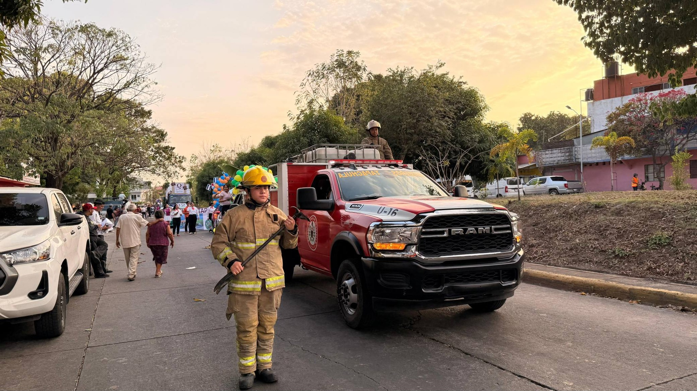
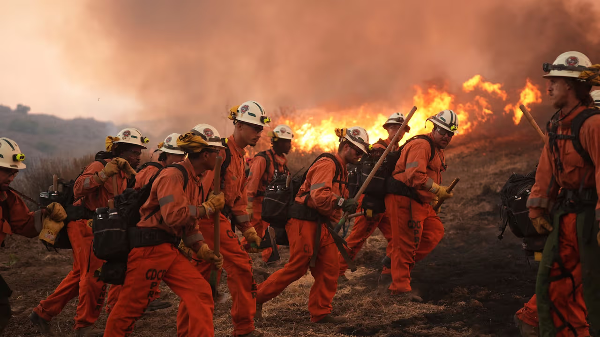
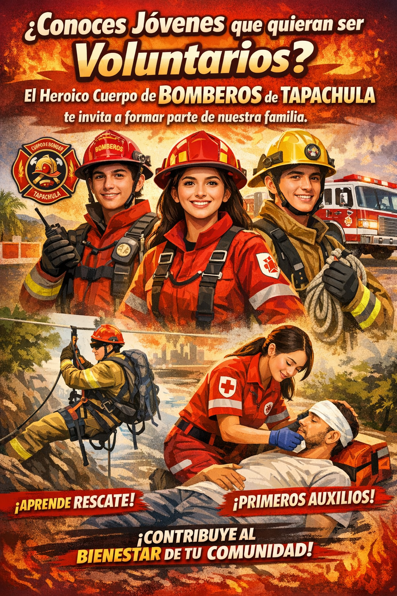
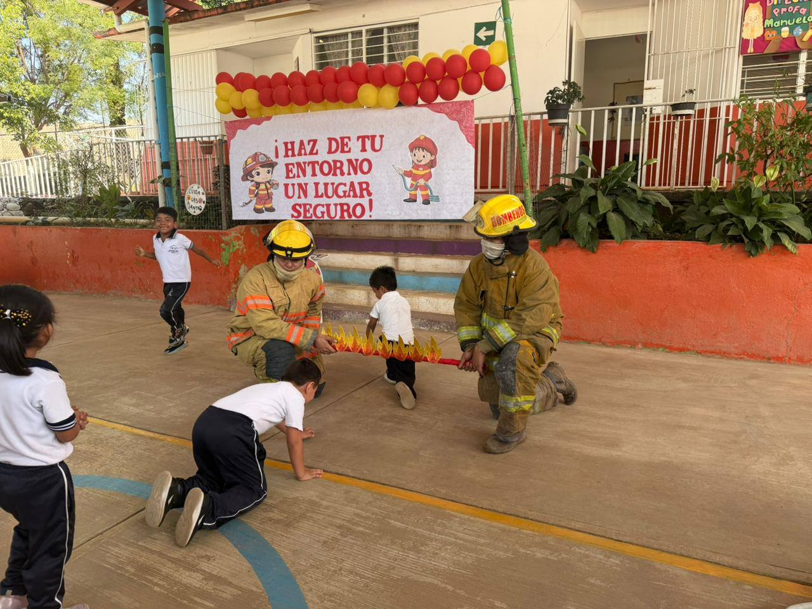

ComunidadDesfile Expo Feria Tapachula 2026
Estuvimos presentes en este hermoso desfile y fue un honor convivir con cada una de las familias tapachultecas que presenciaban este magno evento.
Ver en FacebookProtegiendo vidas y el patrimonio de nuestra comunidad
con honor, valentía y entrega total.

El Heroico Cuerpo de Bomberos de Tapachula trabaja día a día para proteger a los habitantes de nuestra ciudad y sus alrededores. Con personal altamente capacitado y equipo moderno, respondemos ante cualquier emergencia con rapidez y profesionalismo.
Nuestro compromiso va más allá de apagar incendios: brindamos atención médica prehospitalaria, rescate técnico y educación preventiva para toda la comunidad, en corresponsabilidad con autoridades y ciudadanía.
Servicios especializados para proteger a la comunidad de Tapachula


Servicios que presentan riesgo para la población y de no ser atendidos pueden originar emergencias mayores:
Momentos que reflejan nuestro compromiso con Tapachula
El Heroico Cuerpo de Bomberos de Tapachula te invita a formar parte de nuestra familia. Aprende habilidades de rescate, primeros auxilios y contribuye al bienestar de tu comunidad.

Tu apoyo económico al Heroico Cuerpo de Bomberos de Tapachula nos permite mantener y reparar unidades, adquirir herramientas, combustible, material de curación y equipos necesarios para responder mejor ante emergencias.
Mantente informado sobre las actividades del Heroico Cuerpo de Bomberos de Tapachula

ComunidadEstuvimos presentes en este hermoso desfile y fue un honor convivir con cada una de las familias tapachultecas que presenciaban este magno evento.
Ver en Facebook
PrevenciónCompartimos tips de prevención y diversión con los pequeños implementando el programa #ClubBomberitos #BomberitoPorUnDia.
Ver en Facebook Emergencia
Emergencia
El reporte de un operador de taxi activó nuestro protocolo de respuesta. Llegamos rápidamente a sofocar el incendio.
Ver en Facebook Emergencia
Emergencia
Se incendió una casa cerca de la Prepa No. 6. Trabajamos de manera coordinada para sofocar el incendio a tiempo.
Ver en FacebookMáxima autoridad operativa. Dirige y coordina todas las actividades del cuerpo de bomberos.
El corazón de la institución. Personal capacitado en todas las áreas de emergencia y respuesta.
Especialistas en atención prehospitalaria, estabilización y traslado de pacientes.
Equipo con entrenamiento especializado en técnicas de rescate técnico en diversas situaciones.
Llama al 911 — disponible 24/7
(962) 625-2065 — información general
Octava Sur S/N, Los Naranjos, San Sebastián
30700 Tapachula de Córdova y Ordóñez, Chiapas
Lun – Vie: 8:00 AM – 6:00 PM
Sáb: 9:00 AM – 1:00 PM
Conoce qué hacer antes, durante y después de una emergencia
Ante cualquier emergencia, llama de inmediato al 911 o al (962) 625-2065. Estamos disponibles las 24 horas.
Titular: Heroico Cuerpo de Bomberos de Tapachula
Número de cuenta: XXXX-XXXX-XXXX-XXXX
CLABE: XXX XXX XXXXXXXXXX XX
Actualiza estos datos con la información bancaria oficial.Número de tarjeta / referencia: XXXX XXXX XXXX XXXX
Acude a cualquier tienda OXXO y realiza el depósito con el número de referencia.Visítanos en nuestras instalaciones y entrega tu donación directamente.
Dirección: Octava Sur S/N, Los Naranjos, San Sebastián, Tapachula, Chis.
Horario: Lun–Vie 8:00–18:00 | Sáb 9:00–13:00